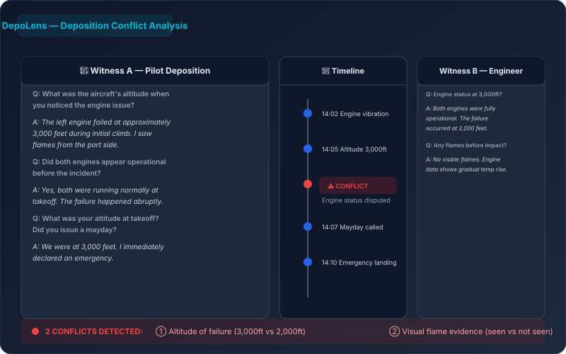
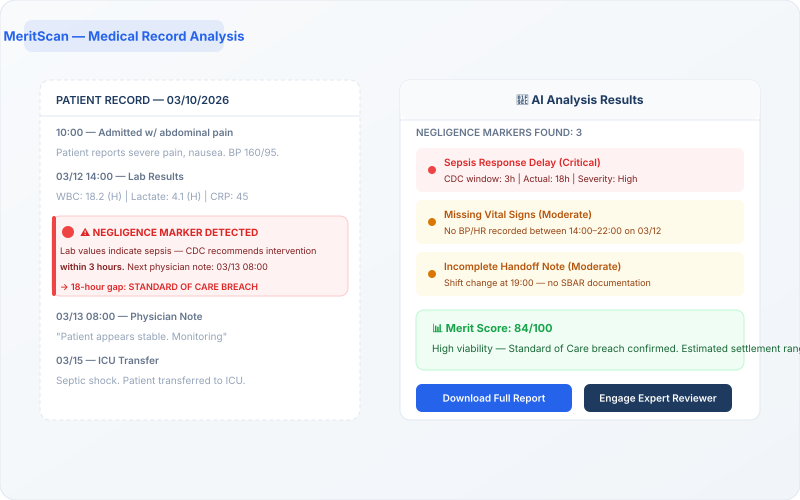

AI Legal Intake for
New York City Law Firms
Stop losing NYC leads to slow response times. LexiFlow captures and qualifies personal injury, family law, and immigration cases 24/7 using Reasoning AI — turning your website into a round-the-clock revenue engine.
NYC Firms Lose Thousands Every Month on Unqualified Leads
With over 50,000 attorneys in New York City alone, competition is fierce. Manhattan personal injury firms spend hundreds of hours each month screening leads — most of which never convert. LexiFlow's AI intake agent handles the screening automatically, so your NYC paralegals focus on high-value cases.
- NYC-Specific Qualification: Our AI understands New York tort law, no-fault thresholds, and statute of limitations.
- Multilingual Intake: Serve NYC's diverse population in 95+ languages. Auto-detects Spanish, Mandarin, Russian, and more.
- Instant CRM Sync: Push qualified leads to Clio, MyCase, or Filevine — the standard for NYC law firms.
What NYC Firms Are Saying
"LexiFlow has transformed our intake. We went from 12-hour response times to instant qualification. Our Manhattan firm has seen a 3x increase in retained cases in just 60 days."
The Complete NYC Legal Tech Suite
Three powerful AI products built for New York City's competitive legal landscape.
LexiFlow Intake
AI-powered intake that qualifies NYC leads 24/7 via web, voice, and email. Automate screening, get settlement estimates, and sync to your CRM.
DepoLens
AI deposition conflict detector. Upload transcripts from NYC depositions and instantly find contradictions between witnesses. Essential for trial prep.
Learn More →
MeritScan
AI medical merit review. Analyze medical records in seconds and get case value estimates. Perfect for NYC PI firms evaluating new intakes.
Learn More →
Built for NYC Law Firms
Everything you need to dominate the New York City legal market.
Reasoning AI Intake
Captures case facts naturally using LLMs. Understands NYC-specific legal nuances like no-fault thresholds and venue rules.
Auto-Demand Drafter
Generate professional demand letters using facts captured during intake. New York civil practice compliant.
AI Voice Receptionist
24/7 phone intake that sounds like a senior paralegal. Handles screening, scheduling, and qualification naturally — never a cold voicemail.
95+ Languages
Auto-detecting language support for NYC's diverse population — Spanish, Mandarin, Cantonese, Russian, and more.
CRM Sync
Push qualified leads directly into Clio, MyCase, Filevine, and Litify — the standard for NYC law firms.
Settlement Estimator
AI-driven valuation models provide conservative settlement estimates for every new NYC lead based on local verdict trends.
See the Attorney Dashboard in Action
Qualified leads flow directly into your dashboard with AI-powered summaries, case scoring, and one-click CRM sync.

AI-Powered Lead Pipeline

24/7 AI Intake Conversation

Intelligent Forms Builder
AI Negligence Marker Detection
Ready to transform your NYC firm's intake?
Join New York City's leading personal injury and family law firms using LexiFlow to automate intake and win more cases.
Unified Attorney Dashboard
Manage all your intakes, document analysis, and CRM syncs in one powerful, AI-driven interface.
Proven Results for Top Firms
See how Clifford Law and Smith LaCien are using LexiFlow to transform their practice.